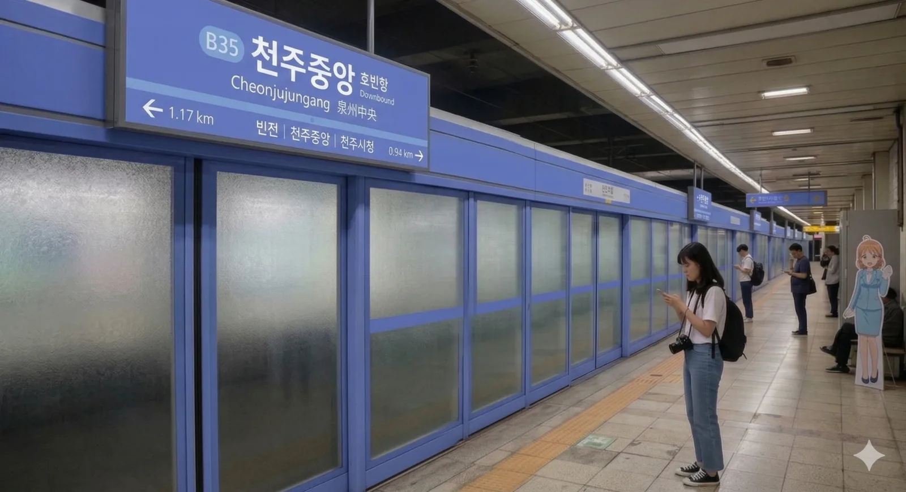

빈효광역전철 B35번. 덕빈북도 천주시 천성구 중앙동2가 203 소재에 위치한 역이다.
천주시 구도심의 정중앙에 박혀 있는 역이다. 원래 이 역이 과거의 '천주역'이었다. 하지만 고속철도(KTX) 공사와 역무 시설 확장 문제로 인해 기존 부지에서는 답이 안 나오자, 2013년경 천주역이 현재의 위치인 천성동으로 으리으리하게 이전해버렸다. 그 여파로 이 역은 한동안 폐역 수준으로 방치되며 문을 닫았다가, 구도심 상권 붕괴를 우려한 주민들의 빗발치는 민원 끝에 2015년부터 기존선을 경유하는 무궁화호가 정차하는 임시역 형태로 부활했다. 이후 2019년 빈효선 광역전철이 개통하면서 무궁화호 취급은 완전히 중단되고, 현재의 광역전철 전용역인 '천주중앙역'으로 재탄생하게 되었다. 파란만장한 역생(驛生)이다
|
빈
천주중앙역 출구 정보
|
||
|---|---|---|
| 번호 | 주요 시설 및 방향 | 비고 |
| 1 | 천성구청 | |
| 2 | 관아동행정복지센터 | |
| 3 | 천주산일중학교, 롯데마트 천주점 | |
구도심의 중심이라 그런지 이용객이 어마어마하다. 매년 꾸준히 증가하여 2024년에는 일평균 2만 명 돌파를 코앞에 두고 있다.
| 천주중앙역 연도별 일평균 이용객 | ||
|---|---|---|
| 연도 | 일평균 이용객 | 비고 |
| 2020년 | 17,104명 | |
| 2021년 | 17,275명 | |
| 2022년 | 19,722명 | |
| 2023년 | 19,921명 | |
| 2024년 | 20,122명 | 집계 중 |

| 빈전 ↑ | ||||
| 하 | ㅣ | ㅣ | 상 | |
| ↓ 천주시청 | ||||
| 상 | 빈 빈효선 광역전철 | 효빈항 · 빈전 방면 |
| 하 | 빈 빈효선 광역전철 | 천주시청 · 고남 방면 |
공식 주소지는 '천성구 중앙동2가 203'으로 등록되어 있지만, 실제 역사가 깔고 앉은(...) 부지 면적을 지적도로 엄밀하게 따져보면 관아동2가의 지분이 미세하게 더 크다. 이름은 중앙역인데 정작 뼈대와 내장은 관아동이다 덕분에 관아동 일대 주민들은 "사실상 우리 동네 역인데 이름만 뺏겼다"며 농담 반 진담 반으로 묘한 억울함을 호소하기도 한다.
2013년 천주역 이전부터 2015년 임시열차 운행 재개 전까지 약 2년간은 그야말로 헬게이트였다. 역이 문을 닫자 주변 상권은 급속도로 망해갔고, 분노한 중앙동 주민들이 시청까지 쳐들어가 깽판강력한 항의를 한 끝에 무궁화호라도 세워달라고 읍소했던 눈물겨운 역사가 있다. 결과적으로는 2019년 광역전철역으로 환골탈태하며 떡상했으니 그야말로 존버의 승리라고 할 수 있다. 근데 건물은 옛날 천주역 건물 재활용이라 여전히 낡아보인다(...)
어르신들 중에는 아직도 이곳을 '천주역'이라고 부르는 경우가 많다. 택시 기사님에게 무심코 "천주역 가주세요" 했다가 KTX 타는 신(新) 천주역(천성동)으로 끌려가는 대참사가 종종 발생하니 몹시 주의해야 한다. 이 동네 짬바바이브를 풍기려면 반드시 "천주중앙역이요" 혹은 "구(舊) 역전 가주쇼"라고 말하자. 잘못 가면 택시비가 만 원은 더 깨진다
빈효선의 마스코트인 '전노아' 등신대 판넬이 역 맞이방 한구석에 세워져 있다. 재밌는 점은 캐릭터의 외형 자체는 러브라이브! 선샤인!!의 타카미 치카를 쏙 빼닮았는데, 정작 빈효선의 노선 색상(연청색)이 뱅드림!의 쿠라타 마시로의 이미지 컬러와 완벽하게 겹치면서 팬들 사이에서는 "치카의 얼굴을 한 마시로"라는 기괴한 밈이 정착해버렸다는 것이다. 이 때문에 럽라이버와 뱅도리머의 대환장 콜라보 씹덕오타쿠들의 소소한 성지순례 스팟이 되었다. 과거 무궁화호 시절의 칙칙한 분위기를 어떻게든 화사하게 살려보려는 한국철도공사의 눈물겨운 똥꼬쇼노력이 엿보인다.
역 주변은 오래된 전통시장과 노포들이 미로처럼 얽혀 있다. 최근 '레트로 열풍'을 타고 젊은 관광객들이 필름 카메라를 들고 방문하며, 빈효선을 타고 온 맛집 탐방러들의 필수 하차역으로 자리 잡았다. 3번 출구 앞 붕어빵 집은 겨울철 웨이팅이 필수이며, 2번 출구 뒷골목에 있는 40년 전통의 소머리국밥집은 천성구청 공무원들의 소울푸드 성지로 불린다.